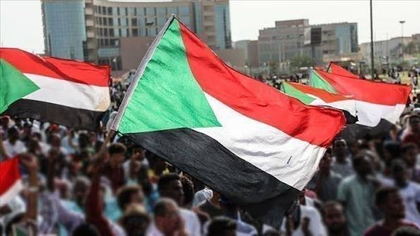

Community Bake Sales
Neighborhood bake sales that turn shared food into direct funding for local mental health sessions.
Youth Movement for Change · Sudan
YMC unites young Sudanese to fund grassroots community projects that support mental health across Sudan — one small act at a time.
Who We Are
Youth Movement for Change (YMC) is a youth-led movement born from a simple belief: young people, working together at the community level, can fund and sustain real mental health support for Sudan. We organize small, local fundraising projects — bake sales, art initiatives, community runs — and channel every contribution toward mental health awareness, care, and support networks across the country.
We are volunteers, students, artists, and organizers. We don't wait for large institutions to act — we start where we are, with what we have, and grow the impact together.

A Sudan where every young person has access to compassionate mental health support, and where hope for the future is within everyone's reach.
To mobilize young people around small, sustainable community projects that fund mental health initiatives, awareness campaigns, and peer support networks across Sudan.
The Need
Years of instability, displacement, and economic hardship have placed an enormous strain on the mental wellbeing of Sudanese communities — especially young people. Yet mental health care remains scarce, and the stigma around asking for help keeps many from seeking support at all.
YMC exists to close that gap from the ground up: funding accessible support, encouraging open conversations, and reminding every young person that they are not alone.
What We Run
Small, local, and repeatable — our projects are designed so any community can run them.
Neighborhood bake sales that turn shared food into direct funding for local mental health sessions.
Youth-led art exhibitions that raise funds while opening honest conversations about mental health.
Peer-led group sessions, funded entirely by community contributions, offering a safe space to talk.
Community walks that bring people together in movement, awareness, and shared purpose.
Where It Goes
Every contribution — however small — is placed directly into community mental health support.
Funds one peer support session for a young person in need
Provides workshop materials for a community awareness event
Supports a full day of a mobile mental health outreach visit
Helps sustain a monthly youth support circle for a full season
Our Impact
Youth Volunteers
Community Projects
Lives Reached
Cities Across Sudan
What Guides Us
We lead with empathy for every person we serve.
Every donation is tracked and used exactly as promised.
Change grows fastest when a whole community carries it.
We hold onto hope, and help others hold onto it too.
We keep building, project by project, no matter the setbacks.
Reach Us
Have a question, an idea, or want to bring YMC to your community? We'd love to hear from you.